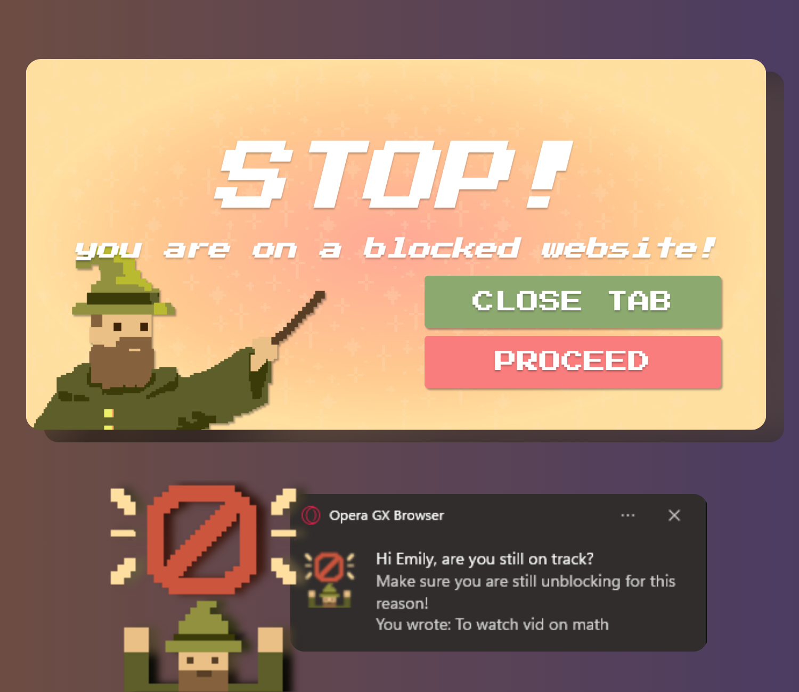
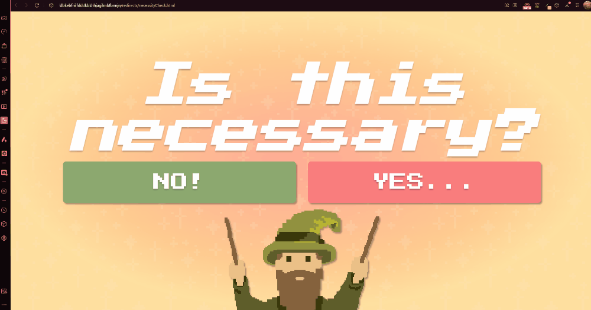
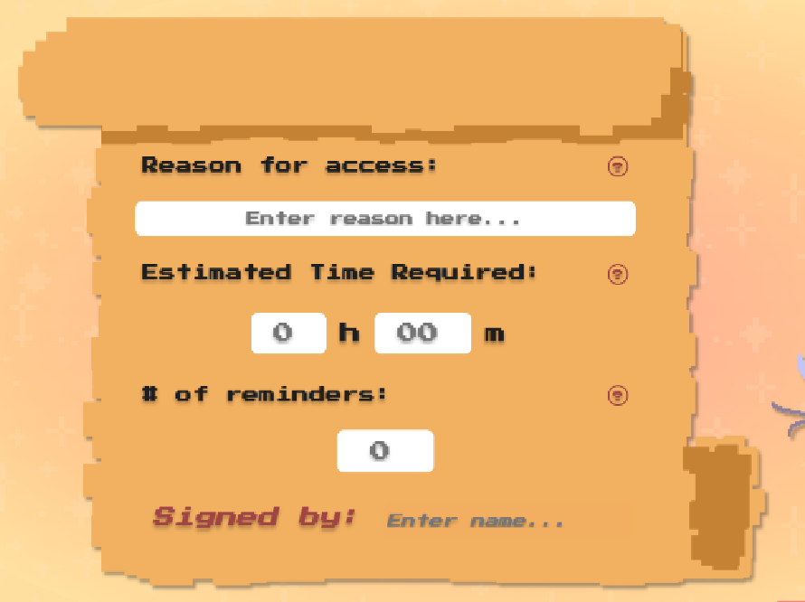
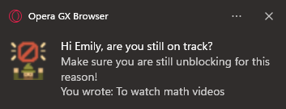

What's this for?
This is a Chrome extension that helps users block websites of their choosing while maintaining flexibility, allowing them to temporarily unblock needed sites under a time-limit (+ with reminders!).
Why make this? While it's invariably true that many website blockers exist, I wanted to try the following:
- learn how to code one myself using HTML, CSS, JS, and the Chrome APIs
- implement some variability/adaptability to the blocking
- design the interface with custom assets and prototyping on Figma
Expanding on the second list item: In my experience, I've found it a hassle having to unblock and block on other extensions. For example, YouTube is very distracting, but I often need it for learning purposes (and the extension doesn't know that). If I unblock the website, the risk of falling into the rabbit-hole of recommended videos while the ban is lifted is quite high, and it's unlikely I continue to use the extension after that...
That's why even though there are many extensions out there with stricter block policies, my goal was not to create a stronger restriction on users,
but instead help them become more aware of where they spend their time and why.
You can go on YouTube if you need, but the blocker makes sure that can't turn into a 3 hour mindless scrolling session.
So how does it go about doing that?
Features
I'll go through the process of using the extension, from adding a website to requesting temporary access.
Blocking a Website
Upon loading and unpacking the extension (which can be found here), clicking the popup lets the user add and remove websites to block.

Accessing any website with the blocked website's hostname will lead you to the following screen:

Clicking 'close tab' closes the current tab, while clicking proceed brings you to the next screen

Choosing 'No' closes the current tab again. In most cases, your journey ends here, and you resume browsing your unblocked websites.
Accessing a Blocked Website
However, this user would very much like to use the blocked website, so they select 'Yes'' on the previous page, bringing them to the scroll of reason (boom effect)


They are also asked how many reminders they want; these reminders are notifications reminding them of the reason they were
unblocking the site. Note: the user must fill this scroll out, or they are not allowed to proceed.
By making the process a little bit tedious, I wanted to make users more aware of what they planned to spend their time on.
Too often have I found myself mindlessly clicking to YouTube without a goal in mind, and then coming back to reality many videos later, wondering what I was doing.
It's a common tip in producitivity to always set goals before beginning a work session, and I wanted to promote that mindfulness here.
After filling the scroll out, the user is redirected to their original url.
(The webpage here is covered so you do not need to witness my terrible YouTube feed, but it will be normal on the user end)


Intermittent notifications (however many you specified) will be sent to the user (as seen on the right).
At the end of the estimated time, the page will be refreshed and redirect you to the original block page.
You are free to repeat the process for more time if you wish!
Design
As mentioned above in the list, I wanted to design the interface with custom assets and try prototyping on Figma!
I had never done either before, so it was enjoyable figuring out what worked and what didn't.
All of the images (the wizard, scroll, etc.) were drawn using https://www.pixilart.com/draw#, a free online site that was
very convenient to use. I had never tried making pixel art, so this brief exploration was pretty fun.
The Figma draft prototype was also a great way to visualize the design I wanted for the extension. It seems half the trouble in working with HTML and CSS is knowing what kind of design you want. By using a resource like Figma, it makes things much simpler, as you're able to drag/drop items to rearrange into a design you like and view their code properties in the developer mode.
I've included the embed to the draft down below, though it might take a while to load, so the link to the playable prototype is also here.